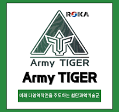

추진 배경
AI·로봇 기술 발전, 병역자원 감소, 다양한 안보위협에 대응해 병력 중심 전투수행체계를 AI·무인체계 기반으로 전환합니다.
Army TIGER+ · Physical AI · 유무인복합전투체계
MotionCommand는 카메라로 손 수신호를 인식해 드론을 조종하는 제스처 기반 통제 체계입니다. 실기체 없이 3D 시뮬레이션으로 훈련하고, 조작 기록으로 잘못된 습관을 사후검토합니다.
카메라가 없어도 화면 버튼이나 키보드로 바로 체험할 수 있습니다.
시뮬레이션 전용 이 체계는 실제 드론과 연동되어 있지 않습니다. 모든 조작은 화면 속 3D 가상 드론에만 반영되며, 실기체 연동은 후속 과제입니다.

조종기 대신 손.01 · 정책 방향
육군은 Army TIGER+를 중심으로 2040년 미래 육군 청사진과 6대 개혁 중점을 제시하고, 국방로봇·피지컬 AI를 활용한 유무인복합부대로의 전환을 추진하고 있습니다. 2026년 10월 14일 양평훈련장에서 열린 미래전 통합 전투수행훈련에서 그 모습이 공개됐습니다.[R1]
AI·로봇 기술 발전, 병역자원 감소, 다양한 안보위협에 대응해 병력 중심 전투수행체계를 AI·무인체계 기반으로 전환합니다.
반도체, 로봇·피지컬 AI, AI데이터센터를 국방분야에서 연결·통합·확장합니다. 육군은 피지컬 AI의 최대 수요처이자 동적 데이터의 최대 공급처입니다.
시범부대를 14개 유형으로 확대하고, 판교 AX 거점과 양평·무건리 훈련장을 연계해 실증환경을 구축합니다.
통합무인전투대('26.1.28. 출범, 드론봇중대 기반)와 유무인복합분대('26.7.29. 출범)로 새로운 전투수행개념을 실험합니다.
드론·로봇 등 첨단전력을 하나의 네트워크로 연결해 소부대부터 대부대까지 단계적으로 확대합니다.
실증전담부대 확대와 부대별 혁신랩 운용으로 첨단기술을 활용할 인적·조직적 기반을 만듭니다.
02 · 연계성
전투원이 장비를 들지 않고 손 동작만으로 무인체계를 통제하는 HMI(인간-기계 인터페이스)를 먼저 훈련 영역에서 검증합니다.
| 정책 요소 | MotionCommand의 기여 |
|---|---|
| 50만 드론 전사 양성 | 실기체·고가 조종기 없이 누구나 PC·스마트폰으로 반복 훈련하는 저비용 교육훈련 수단 |
| 현장 기반의 변혁 (TiC) | 시범부대·혁신랩에서 바로 실증할 수 있는 소프트웨어 시제품. 실증 결과로 성능과 소요를 구체화하는 진화적 발전 방식 |
| 피지컬 AI 데이터 선순환 | 훈련 중 생성되는 제스처·조작 데이터를 축적해 학습 기반 인식 고도화에 활용 |
| 유무인복합분대 · 통합무인전투대 | 손 수신호로 무인체계를 통제하는 운용 개념을 시뮬레이션으로 검증 |
| 디지털 백본 | 기종에 묶이지 않는 소프트웨어 통제 계층으로 다양한 드론을 하나의 인터페이스로 통제하는 방향 제시 |
03 · 문제 제기
시범부대에는 많은 드론이 운용되고 있지만, 여전히 전용 물리 조종기로 조작합니다. 조종기는 정밀 제어와 신호 유지에 강하지만 운용 관점의 한계가 분명합니다.
디스플레이 내장 프로급 조종기와 군용 GCS는 기체만큼 비쌉니다. 파손되면 수리비가 크고, 기종을 바꾸면 새로 사야 합니다.
부피와 무게가 크고 하드케이스와 스트랩이 따로 필요합니다.
안테나 전개, 바인딩, 캘리브레이션까지 비행 전 준비가 복잡합니다.
조종기가 방전·고장·파손되면 비행 중인 기체의 제어 수단이 사라집니다.
대부분 특정 제조사의 특정 기종(세대) 전용입니다.
조종기 배터리 수명과 펌웨어를 따로 관리하지 않으면 연결 오류가 납니다.
| 비교 항목 | 전용 물리 조종기 | 제스처 기반 (MotionCommand) |
|---|---|---|
| 장비 비용 | 고가, 파손 시 수리·재구매 | 기존 스마트폰·PC 카메라 활용 |
| 휴대성 | 부피·무게 큼, 케이스 필요 | 별도 장비 없음 |
| 준비 시간 | 안테나 전개, 바인딩, 캘리브레이션 | 카메라 권한 허용 후 즉시 |
| 장애 대응 | 조종기 고장 시 제어 수단 상실 | 카메라가 있는 다른 단말로 즉시 대체 |
| 호환성 | 제조사·기종 종속 | 소프트웨어 계층에서 기종 독립 설계 |
| 유지관리 | 조종기 배터리·펌웨어 별도 관리 | 웹 업데이트로 일원화 |
| 정밀 제어·신호 안정성 | 우수 | 조명·가림 영향, 보완 필요 |
마지막 행처럼 제스처 방식에도 한계가 있습니다. 그래서 MotionCommand는 조종기를 당장 대체하기보다, 조종기 의존도를 낮추는 보조·예비 통제 수단에서 시작해 단계적으로 확대합니다.
04 · 발전 단계
수신호 7종, 3D 드론, 미션 채점, 사후검토. 훈련 데이터 축적 시작
실기체 연동, 조종기 고장 시 착륙·회수용 비상 통제, 장갑·야간 인식 검증
다수 무인체계 통제, 축적 데이터로 학습 기반 인식 고도화, 디지털 백본 연계
[R1] 육군 정책실 Army TIGER 정책과, 보도자료 「AI·로봇이 바꾸는 전장... 육군, Army TIGER+ 미래전 모습 공개」, 일련번호 2026-166, 2026.10.14.
환경설정
MotionCommand는 PC나 스마트폰에 있는 카메라를 씁니다. 아래 항목이 모두 정상이면 시뮬레이션을 시작할 수 있습니다. 카메라 영상은 기기 안에서만 처리하고 전송하거나 저장하지 않습니다.
카메라가 꺼져 있습니다
이 화면에 내 모습이 거울처럼 보이면 카메라가 정상입니다.
설정 주소: chrome://settings/content/camera
설정 주소: edge://settings/content/camera
카메라는 HTTPS 주소에서만 켜집니다.
조작방법
모든 명령은 같은 손 모양을 잠시 유지해야 실행됩니다. 이동은 0.5초, 전원 켜기·끄기는 1초입니다. 애매하면 드론은 항상 제자리에 멈춥니다.
시뮬레이션 전용 실제 드론과 연동되어 있지 않습니다. 제스처는 화면 속 3D 가상 드론만 움직입니다.
카메라가 꺼져 있습니다
카메라 켜기를 누르거나, 아래 버튼·키보드로 조종해 보세요.
손을 카메라에 보여주세요
3D 엔진을 불러오지 못했습니다. 인터넷 연결을 확인하고 새로고침하세요.
키보드: P 전원 켜기 · ↑ 상승 · ↓ 하강 · ← 좌 · → 우 · O 전원 끄기
드론 교육훈련 사후검토
기록 저장소 확인 중…
예시 기록을 보고 있습니다. 실제 훈련 기록이 아닙니다.
학습 페이지
MotionCommand에 쓰인 모션 인식 이론과 드론 기본 지식, 관련 규정을 정리했습니다.
카메라 영상에서 정보를 뽑는 일은 질문의 정밀도에 따라 단계가 나뉩니다.
이 사진에 손이 있는가?
손이 어디에 있는가? (상자)
어느 픽셀이 손인가?
관절 하나하나가 어디에 있는가?
제스처를 알아내려면 손가락이 펴졌는지, 어느 방향을 가리키는지 알아야 하므로 가장 정밀한 키포인트 단계가 필요합니다.
포즈 추정은 사람 몸이나 손의 관절 위치를 좌표로 찾아내는 기술입니다. 대표적인 접근은 두 가지입니다.
| 구분 | 방식 | 특징 | 예 |
|---|---|---|---|
| Top-down | 사람(손)을 먼저 찾고, 그 영역 안에서 관절을 찾음 | 정확도 높음, 사람 수만큼 계산 증가 | MediaPipe, HRNet |
| Bottom-up | 영상 전체에서 관절을 먼저 찾고 사람별로 묶음 | 여러 명일 때 유리 | OpenPose |
관절 좌표를 내는 방법도 나뉩니다. 히트맵 방식은 관절마다 "여기 있을 확률" 지도를 그려 가장 밝은 점을 고르고, 회귀 방식은 신경망이 좌표 숫자를 바로 출력합니다. 회귀 방식이 가벼워 스마트폰에서 실시간으로 돌리기 좋습니다.
MotionCommand는 Google의 MediaPipe Hands(Tasks Vision)를 브라우저에서 직접 실행합니다. 서버로 영상을 보내지 않습니다.
초당 약 30장
BlazePalm. 손가락보다 모양이 단순한 손바닥을 먼저 찾아 손 영역을 자름
잘라낸 영역에서 관절 21점의 x, y, z 좌표를 회귀로 출력
좌표로 손가락 펴짐과 방향을 계산해 수신호 7종으로 분류
다음 프레임에서는 이전 손 위치를 이용해 1단계를 건너뛰므로 빠르게 추적합니다. 손을 놓치면 다시 1단계부터 시작합니다.
손목(0)과 손가락마다 4개씩, 총 21개 점입니다. 손가락 하나는 뿌리 관절(MCP), 가운데 관절(PIP), 끝 관절(DIP), 끝(TIP)으로 이루어집니다. 엄지는 CMC, MCP, IP, TIP입니다.
z 값은 손목을 기준으로 한 상대 깊이입니다. 손가락이 카메라를 향할 때 길이가 짧아 보여도 z를 함께 쓰면 펴짐을 판정할 수 있습니다.
학습 데이터를 따로 모으지 않고, 관절 좌표의 기하 관계로 판정하는 규칙 기반 분류기입니다. 손 크기는 손목–중지 뿌리 거리(s)로 정규화해 사람마다 손 크기가 달라도 같은 기준을 씁니다.
| 판정 요소 | 계산 |
|---|---|
| 손가락 펴짐 | 손목→끝 거리 > 손목→가운데 관절 거리 × 1.12, 그리고 두 마디 방향의 코사인 > 0.55 |
| 엄지 펴짐 | 엄지 끝↔검지 뿌리 거리 > 0.45s, 엄지 마디가 일직선 |
| OK (전원 켜기) | 엄지 끝↔검지 끝 < 0.35s, 중지·약지·소지 펴짐 |
| 엄지척 / 엄지 아래 | 네 손가락 접힘, 엄지 방향이 수직 ±45° 이내 (위/아래) |
| 검지 좌 / 우 | 검지만 펴짐, 가로 성분 > 세로 성분 × 1.2 (조종자 기준 좌/우) |
| 손바닥 아래 (전원 끄기) | 다섯 손가락 펴짐, 손 전체의 세로/가로 비율 < 0.8 (손이 수평) |
| 정지 (호버링) | 손 미검출, 신뢰도 미달, 정의되지 않은 모양 |
카메라 영상은 거울처럼 좌우를 뒤집어 "조종자 시점"으로 판정합니다. 원래 카메라 기준으로는 왼쪽을 가리킨 검지가 오른쪽으로 찍히지만, 조종자가 왼쪽을 가리키면 드론도 왼쪽으로 갑니다.
같은 판정이 0.5초(전원은 1초) 이어져야 확정. 손을 바꾸는 중간 모양을 무시
기본 0.70 미만이면 명령 없음으로 처리. 현장 조명에 맞춰 조정
애매하면 항상 정지. 실제 무인체계의 안전 원칙과 같음
전원이 꺼져 있으면 이동 명령 무시, 공중에서는 전원 차단 대신 자동 착륙
후속 단계에서는 훈련 중 쌓인 관절 좌표 데이터로 작은 신경망 분류기를 학습시켜 규칙보다 유연하게 판정하도록 고도화할 수 있습니다. 육군이 말하는 "운용 데이터가 AI 학습으로 이어지는 선순환"을 작은 규모로 구현하는 셈입니다.
YOLO(You Only Look Once)는 영상을 한 번만 보고 여러 객체의 위치와 종류를 동시에 찾는 실시간 객체 탐지 모델입니다. 과학화 경계시스템에서 침입자나 위장한 군인을 찾는 데 쓸 수 있습니다. 포즈 추정은 여기서 한 걸음 더 나아가 탐지한 사람이나 손의 자세와 동작까지 읽습니다. 탐지(누가, 어디에)와 포즈 추정(무엇을 하는가)을 결합하면 경계 감시에서는 수상한 행동 인식으로, 교육훈련에서는 동작 교정과 제스처 통제로 확장됩니다. 제작자의 YOLO v5 연구는 제작자 소개에 있습니다.
| 항목 | 설명 |
|---|---|
| 비행 원리 | 멀티콥터는 프로펠러 회전수를 바꿔 추력을 조절합니다. 4개 모두 올리면 상승, 한쪽을 높이면 반대쪽으로 기울어 이동합니다. |
| 롤·피치·요 | 롤은 좌우 기울기(좌우 이동), 피치는 앞뒤 기울기(전후 이동), 요는 제자리 회전입니다. MotionCommand 1단계는 상승·하강과 롤(좌우)만 다룹니다. |
| 호버링 | 같은 위치와 고도를 유지하는 상태. GPS·광류 센서로 위치를 잡습니다. |
| 비행 전 점검 | 기체 외관·프로펠러, 배터리 잔량, 비행 구역과 기상, 통신 연결, 비상 착륙 지점을 확인합니다. |
| 배터리 | 리튬폴리머 배터리는 과방전과 저온에 약합니다. 잔량 30% 이하에서는 복귀를 시작하는 것이 일반적입니다. |
| 비상 절차 | 통신 두절 시 자동 귀환(RTH) 또는 제자리 착륙. 공중에서 모터를 끄면 추락하므로 반드시 착륙 후 정지합니다. |
제작자 정보
육군사관학교 과학기술연구사업단 · 연구개발 및 실증사업, 전력/소요기획
안녕하세요. 저는 육군사관학교 과학기술연구사업단에서 임무 수행 중인 서울의 옥돌입니다.
개인과제로 Pose Estimation을 활용한 교육훈련 발전방향을,
조별 주제로 학습 기반 과학화 경계시스템 고도화 연구를 수행했습니다.
주요 관심 분야는 객체 탐지 및 포즈 추정과 같은 컴퓨터 비전, 증강현실 기반 교육훈련, 인공지능과 군수경영혁신입니다.
성균관대학교 인공지능융합원에서 '22년 AI 소요기획/사업관리 과정 4개월로 시작해 '26-2차 AI 보수교육까지 마무리 지을 수 있어 행복하고 감사했습니다. 군 전력발전을 위해 배운 것들을 잊지 않고 적용해 나가겠습니다. 이제는 AI를 배우는 사람에서 AI로 변화시키는 사람이 되면 좋겠습니다.